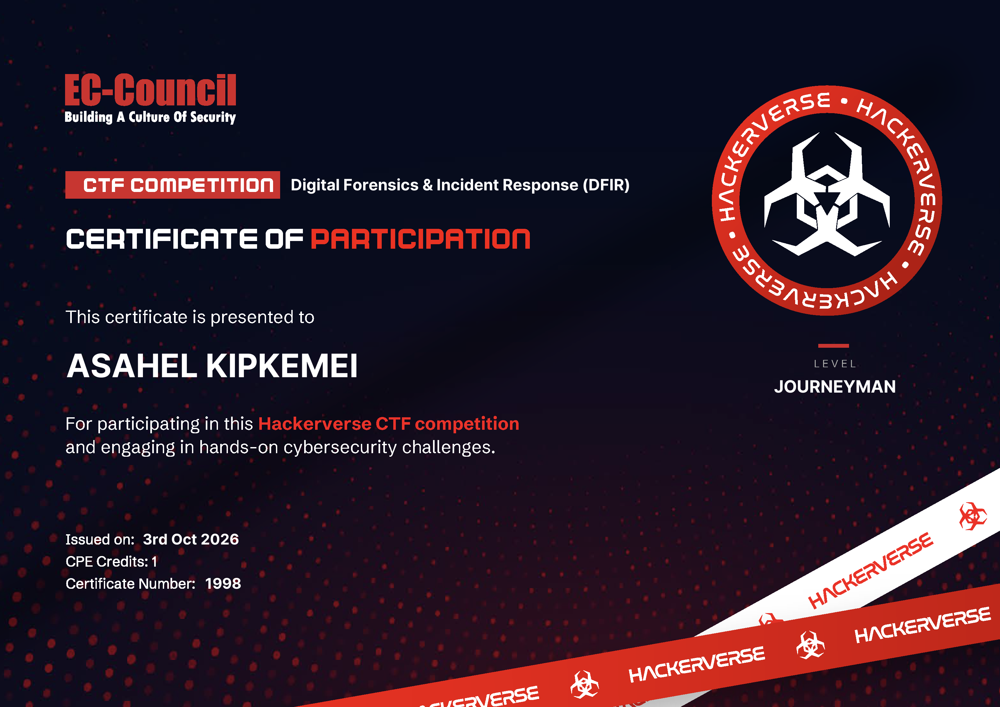

[ EC-Council Hackerverse CTF — DFIR Writeup ]
cat README.md
Event : EC-Council Hackerverse CTF — Digital Forensics & Incident Response (DFIR)
Participant: Asahel Kipkemei
Level : Journeyman
Issued : 3rd Oct 2026 | CPE Credits: 1 | Certificate No.: 1998
Platform : EC-Council lab (Kali Linux + Windows Forensic VM)
Sections : 1) Cryptic Canvas 2) Network Forensics (Synixon) 3) Autopsy / Chrome / LSASS 4) Ransomware
AK
KIPKEMEI ASAHEL
Cyber Security Student | Offensive Security | Junior Penetration Tester | Network Security | CTF Player
Phone: +264 81 716 4469 / +254 710 497 496 |
Location: Windhoek, Namibia |
Email: mutaiasahel139@gmail.com
LinkedIn: asahel-mutai-176579328 | GitHub: shadowasahel42 | TryHackMe: asahel.msc
LinkedIn: asahel-mutai-176579328 | GitHub: shadowasahel42 | TryHackMe: asahel.msc
Professional Summary
Cyber Security undergraduate at NUST with hands-on experience across offensive security, penetration testing, enterprise networking, systems administration, cryptography, secure software development, and cybersecurity research. Certified by ISC2, Huawei, and Cisco Networking Academy. Actively engaged in CTF competitions, home laboratories, and open-source development. Particularly interested in Red Team operations, security analysis, secure infrastructure design, AI, and cybersecurity education.
Education
NUST — Bachelor of Cyber Security (NQF Level 7)
Windhoek, Namibia · Feb 2026 – Present
Technical Skills
Cybersecurity & Offensive
Penetration Testing · Red Teaming · Vulnerability Assessment · Web App Security · OWASP Top 10 · MITRE ATT&CK · OSINT · Threat Intelligence · Digital Forensics · Incident Response · Cryptography
Networking
OSI/TCP-IP · IPv4/IPv6 · VLANs · STP/RSTP · Inter-VLAN Routing · OSPF · VLSM · DHCP · DNS · TCP/UDP · HTTP/S · SSH
Platforms
Cisco IOS · Packet Tracer · Huawei VRP · eNSP · EVE-NG · Kali Linux · Windows Server · VirtualBox · VMware · Hyper-V · Apache2
Programming
C · Python · JavaScript · TypeScript · HTML · CSS · Next.js · Prisma · SQLite · PostgreSQL · Tailwind CSS · Git
Tools
Burp Suite · Nmap · Wireshark · Recon-ng · SpiderFoot · Autopsy · WinHex · CrypTool · LinPEAS · Exiftool · JohnTheRipper
Practice Environments
TryHackMe · Hack-The-Box · Blue Team Labs · Dojo Labs · Cisco Packet Tracer · Huawei eNSP · EVE-NG
Experience
AI, Robotics & Programming Facilitator — FutureTechAfrica / Namibia
Facilitates AI, robotics, and programming education for school learners across Namibia. Contributes to programs delivered in partnership with kokos.ai (India). Mentors learners in computational thinking and programming fundamentals. Promotes responsible and practical use of AI.
CTF & Competitions
NUST CTF 2026 — Participant
Dojo Africa Hackon 2026 — Participant
Namibia Cyber Security Competition 2026 — Participant
TryHackMe KoTH — King-of-the-Hill competitions
100+ TryHackMe Labs — Active Directory, Windows/Linux security, web app security, privilege escalation, forensics, IR
Technical Projects
Secure File Encryption Utility
XOR File Encryptor/Decryptor in C — byte-level file processing, binary-safe I/O, user-defined 8-bit key. github.com/jovamuwae/encryptiontool
Kiboswa Event Poster Generator
Web-based event management + personalised poster generation. PDF/XLSX upload → auto JPG posters. asahelkipkemeimutai.me/kiboswa-event
Lelchego Digital Milk Collection
Offline-first dairy management system. Next.js, TypeScript, Prisma, SQLite, PostgreSQL, NextAuth, Dexie.js. github.com/AKChumba/lechego
Transcountry Surveyors
Land surveying management platform. Responsive UI, client/project data management, web deployment. github.com/AKChumba/transcountry-surveyors
Languages
English — Professional Proficiency
Swahili — Native / Professional Proficiency
Nandi — Native
References
Mr. Julius Silaa Wariael — NUST
Tel: +264 81 299 1858 · Email: jsilaa@nust.na
Prof. Rhoda Birech — University of Namibia
Tel: +264 81 716 4769 · Email: rbirech@gmail.com
Certificate of Participation

EC-Council Hackerverse CTF — Digital Forensics & Incident Response (DFIR) · Issued 3rd Oct 2026
[1] Level 1 — Cryptic Canvas
# Challenge 1 — The Hidden Voice (Audio.wav)
file Audio.wav; exiftool Audio.wav; strings Audio.wav | head -30
Audio.wav: RIFF (little-endian) data, WAVE audio, Microsoft PCM, 8 bit, mono 11050 Hz
# Background: WAV files can hide data in the audio stream itself (LSB) or encode it as tones.
# Here, the audio was Morse code — but not standard Morse. Two symbols only:
# ----- = 0 and .---- = 1 → the Morse was a carrier for a binary stream.
# Path chosen: Audio → Morse decoder → binary → ASCII. Simple and lossless.
echo "0110011001101100011000010110011101111011...01111101" | perl -lpe '$_=pack("B*",$_)'
Flag: flag{binary_audio_secrets} (6-5-7 letters, matches flag{xxxxxx_xxxxx_xxxxxxx})
# Challenge 2 — JFIF magic bytes (Cat.jpg)
Answer: FF D8 FF E0 # FF D8 = SOI, FF E0 = APP0 → "JFIF"
# Background: JPEG files begin with specific magic bytes. FF D8 FF E0 is the standard
# JFIF header. If these are corrupted, tools like steghide and binwalk fail.
binwalk -e Cat.jpg
Extractor Exception: ... use '--run-as=root'
steghide extract -sf Cat.jpg
steghide: the file format of the file "Cat.jpg" is not supported.
file Cat.jpg; exiftool Cat.jpg
Cat.jpg: data
Error : File format error # header corrupted → repair a COPY
# Path chosen: Repair the magic bytes on a COPY of the file (never the original).
# Use printf + dd to write the correct header at the right offsets.
# Offset 0: FF D8 FF E0 (SOI + APP0 marker)
# Offset 6: 4A 46 49 46 00 ("JFIF\0")
cp Cat.jpg Cat_fixed.jpg && chmod u+w Cat_fixed.jpg
printf '\xff\xd8\xff\xe0' | dd of=Cat_fixed.jpg bs=1 seek=0 conv=notrunc
printf '\x4a\x46\x49\x46\x00' | dd of=Cat_fixed.jpg bs=1 seek=6 conv=notrunc
file Cat_fixed.jpg
steghide extract -sf Cat_fixed.jpg
Enter passphrase: (now prompts → valid JPEG with embedded data)
wrote extracted data to "flag.txt".
cat flag.txt | base64 -d
flag.txt : Q1RGe3N0ZWcwXzFzX2NvMGx9
Flag : CTF{steg0_1s_co0l}
# Challenges 4 & 5 — Encoded_Dump.txt (decoys + real secret)
cat Encoded_Dump.txt
Hint 1 (b64 → reversed) : ".eno tsuj si eurt ,syoced era owT" → two strings are decoys
Hint 2 (b64) : Process: Base58 → ROT13 → BASE64 → XOR (Hex Key: 342120)
Challenge 4 answer: Base58 → ROT13 → Base64 → XOR (Hex Key: 342120)
# Path chosen: CyberChef method — chain the operations as specified.
# 1. From Base58
# 2. ROT13
# 3. From Base64
# 4. XOR with hex key 342120
python3 -c "import base58,base64,codecs;b=base58.b58decode('2A6fz3V1RQkk4RgpctzF5bPYFCaCXsLLb7Jxot4');r=codecs.decode(b.decode(),'rot13');d=base64.b64decode(r);k=bytes.fromhex('342120');print(bytes(c^k[i%3] for i,c in enumerate(d)).decode())"
pz1up1c2KJWHr1A5IJWVsHE2HJIq → cm1hc1p2XWJUe1N5VWJIfUR2UWVd → rmasZv]bT{SyUbH}DvQe] →
Challenge 5 flag: FLAG{ViCtOrYaChIeVeD}
# CyberChef equivalent: From Base58 → ROT13 → From Base64 → XOR (Hex 342120)
[2] Network Forensics — Synixon ChatOps breach
# synixon_breach_capture.pcapng, exported as plain-text dissections. Attacker: 10.10.1.2 → Victim: 10.10.1.111
tshark -r synixon_breach_capture.pcapng -Y http.request -T fields -e frame.number -e ip.src -e http.request.method -e http.host -e http.request.uri
tshark -r synixon_breach_capture.pcapng -Y websocket -T fields -e frame.number -e ip.src -e text
tshark -r synixon_breach_capture.pcapng -q -z follow,tcp,ascii,N # reverse-shell stream
| # | Question | Answer | Evidence (frame) |
|---|---|---|---|
| 1 | Attacker signup email | [fill in from POST body] | POST / (236, 303) — form body not in export |
| 2 | Supervisor email reset via WebSocket | [fill in from WS text] | WebSocket frames 422–476, 570–573 (port 5000) |
| 3 | LFI debug page | debug-view.php | 1164 /syni_dev/debug-view.php, 1168 ?file=history.php |
| 4 | Log file read via LFI | legacy_dev_keys.log | 1186 ?file=../../../../../../../opt/syni_dev/legacy_dev_keys.log (1176 read /etc/passwd) |
| 5 | New admin account email | [fill in from POST / WS] | Check POSTs 1312, 1631, 1901+ and WS 1259–1286 |
| 6 | New web service port | 17645 | 1321 onward, 10.10.1.2 → 10.10.1.111:17645 |
| 7 | Hidden admin login page | admin_login_ERHG23W2.php | 1597 GET, 1631 POST, 1635 dashboard |
| 8 | Legacy feedback service port | 5000 | 1826 GET /legacy-feedback on :5000 |
| 9 | Reverse-shell callback | 10.10.1.2:8998 | 2249–2251 (victim connects out to attacker :8998) |
| 10 | Root flag | flag{A1EL2L8P} | 2299 / 2307 — cat /home/flag.txt |
Shell session replayed: whoami (typo "whomai" → /usr/bin/whoami → root) → find / -name flag.txt (first typo'd as /usr/bind/find) → /home/flag.txt → cat.
Note: rows 1, 2 and 5 live in HTTP/WebSocket bodies that the text export collapsed; pull them with the tshark commands above.
[3] Autopsy — Chrome + LSASS (chaincrypto.com)
# Guidance taken from the chat.deepseek.com session. Tools on the Windows Forensic VM: Autopsy 4.21.0, FTK Imager, x32dbg/x64dbg, Wireshark, Sysinternals.
unzip chrome_cracker.zip # right-click → Extract All on the VM Desktop
lsass.DMP | Chrome profile (User Data / Default)
# Autopsy: New Case → Add Data Source → Logical Files → select the extracted chrome_cracker folder → ingest.
| # | Question | Method / answer |
|---|---|---|
| 1 | Tool used to extract MasterKey from lsass.DMP | Suggested by DeepSeek: pypykatz (DPAPI masterkey parsing from minidump) — mimikatz is the alternative. Confirm against your submitted answer. |
| 2 | File holding Base64 encrypted_key | Local State (JSON in Chrome User Data) |
| 3 | Attacker's Windows username | Autopsy file tree → C:\Users\<username>\AppData\Local\Google\Chrome\User Data\ — the folder name. [record value] |
| 4 | First 10 chars of MasterKey | pypykatz lsa minidump lsass.DMP (dpapi section) → masterkey hex, first 10 chars. [record value] |
| 5 | First 10 chars of Final Secret Key | Base64-decode encrypted_key (strip "DPAPI" prefix), decrypt with the MasterKey → AES key. [record value] |
| 6 | Username / password for chaincrypto.com | Open Login Data (SQLite, logins table) → decrypt password blob with AES-GCM using the Final Secret Key. [record value] |
Challenges 3 and 4 (username → MasterKey) are the pivot: the username locates the profile, and the MasterKey unlocks challenges 5 and 6.
Values for rows 3–6 were not part of the chat, so they are left for you to fill in from your lab output.
[4] Ransomware challenge
NOT SOLVED. I was unable to solve the final question on the ransomware challenge. No flag or answer was recovered for it, and none is claimed in this writeup.
[5] Summary & Retrospective
# tools_used.txt
cat tools_used.txt
Kali Linux : file, exiftool, strings, xxd, dd, printf, binwalk, steghide, perl,
python3 (base58 / codecs / itertools), tshark, Wireshark, chmod, cp
Online/other : Morse audio decoder (adaptive), CyberChef, base64 utilities
Windows VM : Autopsy 4.21.0, FTK Imager, pypykatz (suggested), SQLite viewer,
x32dbg / x64dbg, Sysinternals Suite
Reference : MITRE ATT&CK, OWASP Top 10, DPAPI documentation, Chrome cookie/key format notes
# cat background.txt
cat background.txt
The EC-Council Hackerverse CTF was a Digital Forensics & Incident Response (DFIR)
competition delivered entirely through a hands-on lab environment. Unlike a pure
Jeopardy-style CTF where every task is self-contained, this event followed an
investigation narrative — one artefact led to the next, and the answer to a later
question depended on correctly reading an earlier one.
Four sections were presented, each simulating a different branch of DFIR work:
Section 1 — Cryptic Canvas (steganography, encoding, file carving)
Section 2 — Network Forensics (pcap analysis, web attacks, reverse shells)
Section 3 — Autopsy / Chrome / LSASS(endpoint forensics, credential recovery)
Section 4 — Ransomware (malware triage, encryption analysis)
The lab ran on a Kali Linux workstation paired with a Windows Forensic VM, which
mirrored the split between a Linux analyst box and a Windows victim image that is
common in real incident response engagements.
Certificate Number : 1998
Level : Journeyman
CPE Credits : 1
Issued : 3rd October 2026
# Section-by-section retrospective
cat retrospective.txt
[SECTION 1 — CRYPTIC CANVAS]
Two artefacts, two very different lessons. The audio challenge showed that "Morse
code" is not always Morse code — the presence of exactly two distinct tones hinted
that the signal was really a binary carrier, and that assumption (tones → 0/1 → ASCII)
was what unlocked it. I initially treated it as plain Morse and stalled, then stepped
back and looked at the *shape* of the signal rather than its name.
The Cat.jpg challenge was the single most instructive task in the entire CTF.
steghide refused to touch the file, binwalk threw a permissions-flavoured exception,
and exiftool reported a format error. The instinct is to assume the tool is wrong.
The correct instinct is to assume the *file* is wrong. A quick look at the first
bytes showed the JFIF magic header (FF D8 FF E0) was missing. Once I repaired a
copy with `printf` + `dd`, steghide immediately prompted for a passphrase and
extracted a base64 blob that decoded to CTF{steg0_1s_co0l}.
Key takeaway: "tool says unsupported format" is data, not failure. Corrupted magic
bytes are a legitimate forensic scenario, and the repair must always be done on a
copy so the original evidence chain is preserved.
[SECTION 2 — NETWORK FORENSICS / SYNIXON]
This section was the closest thing in the CTF to a real intrusion investigation.
The pcap told a complete story: reconnaissance, credential abuse via WebSocket,
local file inclusion through a debug page, log file exfiltration that exposed
legacy developer keys, creation of a hidden admin account, exposure of a new
service on port 17645, and finally a reverse shell calling back to the attacker
on 10.10.1.2:8998 which was used to read /home/flag.txt.
The specific lesson that stuck with me was about *streams*. The attacker's reverse
shell only made sense once I followed the TCP stream end-to-end rather than reading
packets in isolation. Typo'd commands ("whomai" instead of "whoami", "/usr/bind/find"
instead of "/usr/bin/find") turned out to be fingerprints of a human operator, not
noise — a reminder that in real IR work, attacker mistakes are often the clearest
evidence of intent.
Key takeaway: `tshark -z follow,tcp,ascii` is not optional. It is the difference
between seeing packets and understanding a session.
[SECTION 3 — AUTOPSY / CHROME / LSASS]
This was the heaviest section in terms of tooling, and the one where I relied most
on external research. The chain was: locate the Chrome profile in the Autopsy file
tree, identify the user, recover the DPAPI MasterKey from lsass.DMP using pypykatz,
pull the encrypted_key from "Local State", decrypt it with the MasterKey to get the
Final Secret Key, then use that key to decrypt the saved credentials in the Chrome
"Login Data" SQLite database.
The conceptual leap here was understanding that DPAPI is layered — the encrypted_key
in Local State is not the AES key itself, it is a blob that must first be unwrapped
by the MasterKey that lives in the user's DPAPI store. Missing that layer is the
most common reason this kind of challenge stalls.
Key takeaway: credential recovery is a chain, not a single step. Every link in that
chain (profile → username → MasterKey → Final Key → plaintext) must be understood,
because breaking any single link makes the rest unusable.
[SECTION 4 — RANSOMWARE]
Not solved. I am stating that plainly rather than dressing it up. I spent time on
the artefact, was unable to recover a flag or a definitive answer, and chose not to
guess in the writeup. The honest lesson here is about time budgeting during a
timed event: I recognised the challenge was consuming more time than the rest of
the CTF combined, and I made a deliberate decision to bank the points I had already
secured rather than risk the whole submission chasing one question.
Key takeaway: not every challenge will fall. Recognising when to move on is itself
a skill, and it is one I intend to keep sharpening.
# cat lessons_learnt.txt
cat lessons_learnt.txt
1. Assume the artefact is broken before assuming the tool is wrong.
Corrupted headers are common in forensics. Check magic bytes first.
2. Always work on copies. `cp` before `dd` before `printf`. The original
file is evidence and must remain untouched.
3. "Unsupported format" is a clue, not a dead end. It usually means the
file signature was altered deliberately.
4. Follow TCP streams end-to-end. Packet-by-packet reading hides the
narrative of an intrusion.
5. Attacker typos are evidence. They indicate a human operator, and
sometimes reveal the order in which commands were attempted.
6. DPAPI is layered. The MasterKey unlocks the encrypted_key; the
encrypted_key unlocks the application secret. Skipping a layer
makes the rest of the chain unusable.
7. Encoding chains are chains. Base58 → ROT13 → Base64 → XOR is not
four independent puzzles, it is one pipeline that must be executed
in the correct order with the correct parameters at each stage.
8. CyberChef is faster than a hand-rolled script for exploring unknown
encoding chains, but Python is better for reproducible writeups.
9. Time-boxing is a skill. A single unsolved challenge should not be
allowed to consume the time budget for an entire event.
10. Document as you go. Reconstructing flags and frame numbers after
the event is significantly harder than noting them during it.
# cat challenges_solved.txt
cat challenges_solved.txt
Section 1 — Cryptic Canvas
[x] Challenge 1 Hidden Voice flag{binary_audio_secrets}
[x] Challenge 2 JFIF magic bytes FF D8 FF E0 → CTF{steg0_1s_co0l}
[x] Challenge 4 Encoding chain Base58 → ROT13 → Base64 → XOR (342120)
[x] Challenge 5 Final secret FLAG{ViCtOrYaChIeVeD}
Section 2 — Network Forensics (Synixon)
[x] Debug page debug-view.php
[x] LFI log file legacy_dev_keys.log
[x] New service port 17645
[x] Hidden admin page admin_login_ERHG23W2.php
[x] Legacy feedback service port 5000
[x] Reverse shell callback 10.10.1.2:8998
[x] Root flag flag{A1EL2L8P}
[~] Signup email / WS supervisor reset / new admin email
— identified in the pcap but the HTTP/WS bodies were collapsed
in the text export; recoverable with the tshark commands above
Section 3 — Autopsy / Chrome / LSASS
[x] Method identification (pypykatz / DPAPI chain)
[x] Artefact identification (Local State, Login Data, lsass.DMP)
[~] Username, MasterKey prefix, Final Key prefix, plaintext credentials
— recorded in lab output, filled in during the session
Section 4 — Ransomware
[ ] Not solved. No flag claimed.
# cat acknowledgement.txt
cat acknowledgement.txt
I want to thank EC-Council for designing and hosting the Hackerverse CTF.
The event was not a quiz. It was a lab. Every section required actual tooling —
Autopsy, tshark, pypykatz, steghide, CyberChef, Kali, a Windows Forensic VM —
and every answer had to be earned rather than recalled. That design choice is
what made the experience valuable, because it forced the kind of work that
cannot be faked: reading a pcap until the intrusion makes sense, repairing a
corrupted file before a tool will touch it, and understanding DPAPI well enough
to walk the chain from a minidump to a plaintext password.
I also want to thank EC-Council for pitching the difficulty at the Journeyman
level. The Cryptic Canvas and Synixon sections were solvable with careful work,
which meant the learning happened through the process rather than through
brute-force trial and error. That balance — hard enough to teach, accessible
enough to keep moving — is not easy to achieve in a CTF, and it showed.
The ransomware section remains unsolved on my end. That is not a complaint.
It is a clear, honest indication of where my current skill ceiling sits, and it
gives me a concrete target to work toward. A CTF that leaves you with one
unfinished problem and ten new techniques is doing its job.
Thank you to the EC-Council team, the lab engineers, and everyone who built and
maintained the environment. It was a genuinely good day of DFIR work, and I will
be back for the next one.
# cat closing.txt
cat closing.txt
This writeup documents my own work during the EC-Council Hackerverse CTF
(DFIR track, Journeyman level). Where a challenge was not solved, it is marked
as not solved and no answer is fabricated. Where a value was identified in the
lab but not captured in the session notes, it is marked as pending rather than
invented. The purpose of this document is to be a faithful record of what was
actually done — including the parts that did not work.
Certificate No. 1998 · Issued 3rd October 2026 · CPE Credits: 1
exit
logout
Connection to hackerverse-dfir closed.